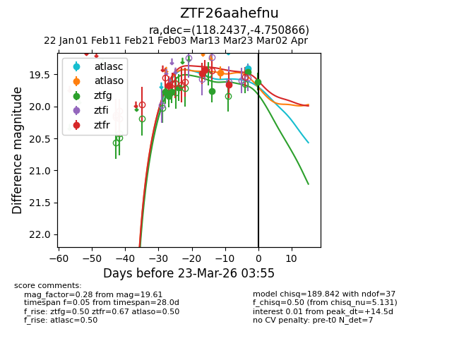
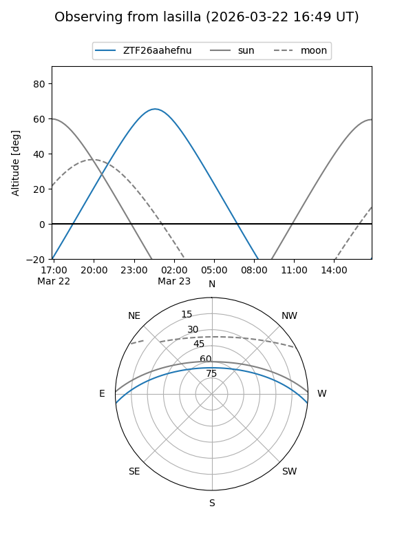
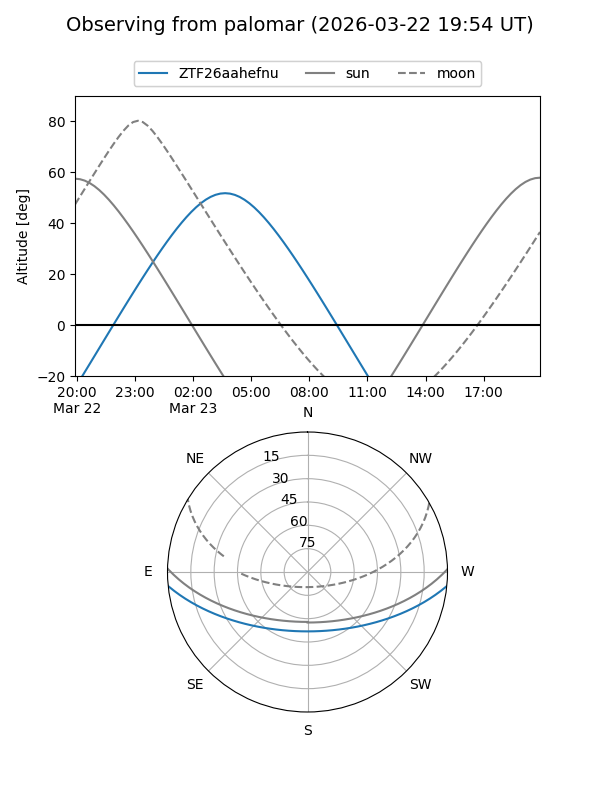
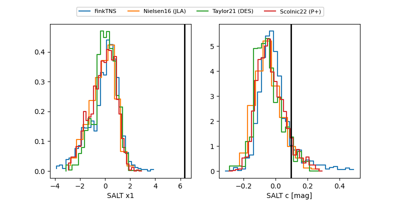

ZTF26aahefnu
Target ZTF26aahefnu at 2026-03-23 03:57
Aliases and brokers:
FINK: link
Lasair: link
ALeRCE: link
alt names
ZTF26aahefnu (ztf,fink_ztf)
Coordinates:
equatorial (ra, dec) = 118.2437,-4.75087
equatorial (HMS+DMS) = 07:52:58.49,-04:45:03.12
galactic (l, b) = (224.3618,+11.39245)
Flags:
Photometry:
last atlasc=19.40, atlaso=19.47, ztfg=19.61, ztfr=19.66
1 atlasc, 1 atlaso, 7 ztfg, 4 ztfr detections
Lightcurve

Visibility


Additional plots
